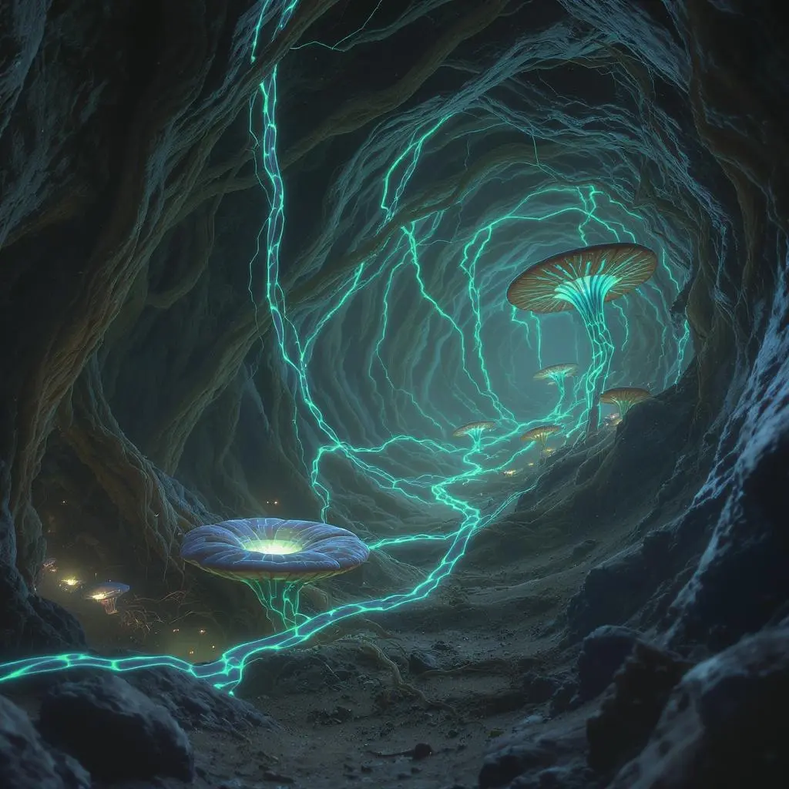
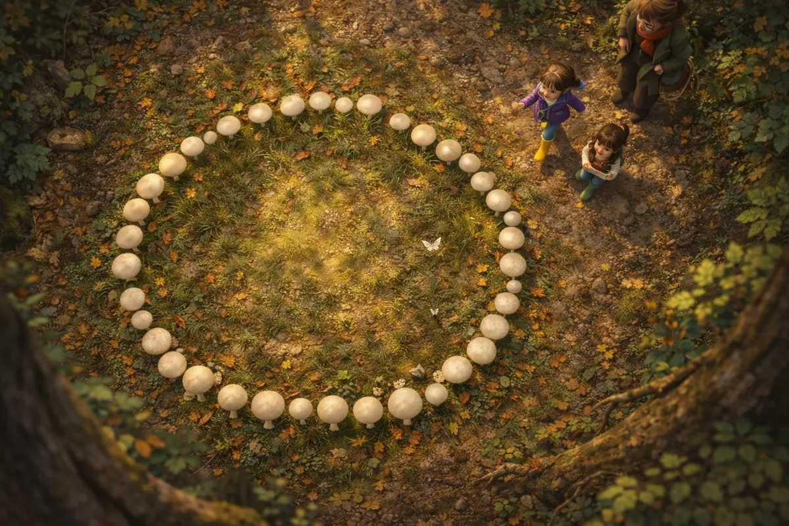

Shrink down. Log on. Explore the oldest network on the planet.

Fun-Gus: The Forest Has WiFi is a transmedia children's universe (ages 4–9 with adult layers) that teaches real mycology, microbiology, and ecology through Pixar-quality animated characters.
The core concept: fungi and trees form Earth's original intelligent communication network called SILLIUM — nature's internet that predates human technology by 450 million years.
Two kids — Birch (8) and Fern (7) — step into a glowing fairy ring, shrink to spore-size, and discover a vast underground world of talking fungi, cooperative trees, and ancient secrets. Their guide: Fun-Gus, a warm amanita mushroom who's been running the network since before dinosaurs.

In Sillium, light means something. Every glow carries meaning.
| Color | Meaning | Example |
|---|---|---|
| Communication & active signals | Network messages, active threads, healthy connections | |
| Warmth, nutrition & growth | Sugar transfer, learning moments, Spora's first signal | |
| Ancient knowledge & memory | Truff-Low's glow, deep history, old network paths | |
| Danger & warning | Distress signals, Blight's corruption, network threats | |
| Stories & narrative memory | Chanty's story-dust, folklore connections |
The world of Sillium is vast, layered, and alive.
Surface gateway. A circle of glowing mushrooms where Birch and Fern enter the underground world. Based on real fairy ring formations.
Central network junction where Fun-Gus coordinates. Threads from every direction converge here. The beating heart of Sillium.
Where mother trees feed seedlings through the network. Rhiza manages the nutrient exchange. Warm amber light everywhere.
Truff-Low's domain. The oldest, darkest part of the network where ancient memories are stored. Purple-orange glow of deep time.
Where the network thins and threats emerge. Lumos scouts these dark paths. Snapper guards the perimeter. Stakes are highest here.
Where the Recyclers break down dead matter. "Nothing is wasted!" Cheerful decomposers turning endings into beginnings.
Fun-Gus is built for two audiences. Kids get a thrilling adventure underground. Adults notice something else entirely about Ms. Hawthorn, the children's teacher.
Is she... something more than human? A figure from Celtic folklore? An ancient being in human form who's been tending the connection between children and nature for centuries?
The show never confirms. Only hints. Never stated. Only wondered.
22 episodes across 3 seasons, mapped and ready for production.
Birch and Fern discover Sillium. Meet the core fungal cast. Learn the network's power. Spora finds her signal. First hints about Ms. Hawthorn.
Bacteria and insect kingdoms join. Three-kingdom alliance forms. Bigger threats emerge. Morel, Physa, and Russula debut. The network expands.
Cordyceps arrives. The network faces its greatest threat. Everything the cast has learned is tested. The Ms. Hawthorn mystery deepens.